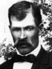
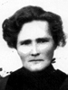

|
Hans Sorensen
and Ane Nielsen |
----> |
 |
Parley Peter Sorensen
Born 11 Jul 1862 Maarslet, Aarhus, Denmark
Died 8 Nov 1927 Aurora, Sevier, Utah, USA
Emma Christina Helquist
Born 30 Sep 1866 Haroldstock, Skorby, Sweden
Died 12 Mar 1938 Aurora, Sevier, Utah, USA
Married 20 Jan 1887 Koosharem, Sevier, Utah, USA
|
 |
and |
Children:
| * |
Parley Earvan Sorensen
Born 18 Sep 1888, Died 2 Oct 1888 Koosharem, Piute, UT
The 1st child of Parley Peter Sorensen and Emma Christina Helquist
|
| * |
Murthe Malenda Sorensen
Born 2 Jan 1890, Died 21 Sep 1890 Aurora, Sevier, UT
The 2nd child of Parley Peter Sorensen and Emma Christina Helquist
|
  |
Wallace Hans Sorensen
Born 11 Jul 1891 Aurora, Sevier, Utah, USA
Died 28 Mar 1976 Richfield, Sevier, UT
Married
Elva Clark 11 Jul 1917 Manti, Sanpete, Utah, USA
The 3rd child of Parley Peter Sorensen and Emma Christina Helquist
|
|
Cline Sorensen
Born 25 Jan 1894 Aurora, Sevier, Utah, USA
Died 18 May 1965 Aurora, Sevier, UT
Married
Rita Catherine Stevens 21 Nov 1917 Manti, Sanpete, Utah, USA
The 4th child of Parley Peter Sorensen and Emma Christina Helquist
|
|
Lora E Sorensen
Born 2 May 1896 Aurora, Sevier, Utah, USA
Died 8 Jul 1962 Gunnison, Sanpete, UT
Married
Jesse Elvon Day 10 Sep 1919 Manti, Sanpete, Utah, USA
The 5th child of Parley Peter Sorensen and Emma Christina Helquist
|
|
Emma Floy Sorensen
Born 20 Jun 1899 Aurora, Sevier, Utah, USA
Died 21 Nov 1959 Provo, Utah, UT
Married
Edgar Rollo Moody 8 Sep 1920 Salt Lake City, Salt Lake, Utah, USA
The 6th child of Parley Peter Sorensen and Emma Christina Helquist
|
|